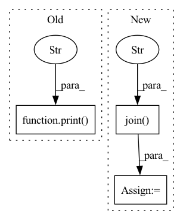

Pattern ID :1249
Before Change
if task is None:
print("[1] Map PTB-XL to MIMIC-III")
mapped_ptbxl = map_to_mimiciii(args.ptbxl_dir, args.mimic_dir)
print("[2] Encode mapped PTB-XL database" )
encoded_ptbxl = encode_ptbxl(args.ptbxl_dir, ptbxl_database=mapped_ptbxl)
print("[3] Instantiate templates based on the encoded PTB-XL")
sampled_data, grounding_data = instantiate_template(
ptbxl_dir=args.ptbxl_dir,After Change
// elif task == "map_to_mimiciii":
// map_to_mimiciii(args.ptbxl_dir, args.mimic_dir)
elif task == "encode_ptbxl":
ptbxl_database = pd.read_csv(os.path.join( args.ptbxl_dir, "ptbxl_database.csv" ) )
ptbxl_database = ptbxl_database[ptbxl_database["validated_by_human"]]
ptbxl_database["report"] = (
ptbxl_database["report"].map(lambda x: x.replace("ekg", "ecg").replace(".", ""))
)
In pattern: SUPERPATTERN
Frequency: 9
Non-data size: 3
Instances Fragment ID: 6297541
Project Name: jwoo5/fairseq-signals
Commit Name: 1865c0c83ba4ae18aa46838313c7350b8b440f60
Time: 2023-02-25
Author: ojw0123@korea.ac.kr
File Name: fairseq_signals/data/ecg_text/preprocess/ptbxl_qa_pipeline.py
M Class Name: AnonimousClass
N Class Name: AnonimousClass
M Method Name: main(1)
N Method Name: main(1)
M Parent Class:
N Parent Class:
M File Name: fairseq_signals/data/ecg_text/preprocess/ptbxl_qa_pipeline.py
N File Name: fairseq_signals/data/ecg_text/preprocess/ptbxl_qa_pipeline.py
M Start Line: 88
M End Line: 122
N Start Line: 108
N End Line: 161
Before Change
batches=batches, module_name=module_name, flatten_acts=flatten_acts
)
print(
f"...Features successfully extracted for all {len(features)} images in the database."
)
print(f"...Features shape: {features.shape}")
return features
After Change
(batch_i % save_every == 0 and batch_i > 0)
or (batch_i == len(batches) - 1)
):
features_fp = os.path.join(
output_dir,
f"features_{last_image_ct}-{image_ct}.npy" ,
)
np.save(features_fp, np.vstack(features))
features = []
last_image_ct = image_ct
Fragment ID: 6297554
Project Name: vicco-group/thingsvision
Commit Name: bd3205e3bd67d40f9e38f74cd704047138ccadf3
Time: 2022-11-01
Author: johannes@roth24.de
File Name: thingsvision/core/extraction/base.py
M Class Name: BaseExtractor
N Class Name: BaseExtractor
M Method Name: extract_features(6)
N Method Name: extract_features(4)
M Parent Class:
N Parent Class:
M File Name: thingsvision/core/extraction/base.py
N File Name: thingsvision/core/extraction/base.py
M Start Line: 56
M End Line: 63
N Start Line: 37
N End Line: 111
Before Change
shp = norm.shape + (1,) * (node_feat.dim() - 1)
norm = th.reshape(norm, shp)
node_feat = node_feat * norm
print("Norm Feature Succeed" )
graph_data = (graph, labels, tr_label_idx, val_label_idx, test_label_idx, node_feat)
return graph_data
After Change
print(" Test label number: {}".format(test_label_idx.shape[0]))
node_feat = th.from_numpy(np.load(os.path.join(base_path, "features.npy"))).float()
walk_feat = th.from_numpy(np.load(os.path.join( base_path, "deepwalk.npy" ) )).float()
features = th.cat((node_feat, walk_feat, edge_feat), dim=1)
print("//////////////////////////////// Feature info: //////////////////////////////")
print("Node\"s feature shape:{}".format(node_feat.shape)) Fragment ID: 6297556
Project Name: langgege-cqu/maxp_dgl
Commit Name: 5f428bb0d6bfb9dad16f32ca3d65785469b69c00
Time: 2021-12-11
Author: 8747734+bugczw@user.noreply.gitee.com
File Name: maxp_model_czw/unimp/util.py
M Class Name: AnonimousClass
N Class Name: AnonimousClass
M Method Name: load_dgl_graph(1)
N Method Name: load_dgl_graph(2)
M Parent Class:
N Parent Class:
M File Name: maxp_model_czw/unimp/util.py
N File Name: maxp_model_czw/unimp/util.py
M Start Line: 8
M End Line: 52
N Start Line: 13
N End Line: 47
Before Change
// Check whether the training progress of the last abnormal end is restored, for example, the power is cut off in the middle of the training.
if resume:
print("Resuming..." )
model.load_state_dict(torch.load(resume_weight, map_location=device))
// Create GradScalar function.
scaler = amp.GradScaler()After Change
def main() -> None:
// Create a folder of super-resolution experiment results
samples_dir = os.path.join("samples", config.exp_name)
results_dir = os.path.join("results" , config.exp_name)
if not os.path.exists(samples_dir):
os.makedirs(samples_dir)
if not os.path.exists(results_dir):
os.makedirs(results_dir) Fragment ID: 6297544
Project Name: lornatang/srcnn-pytorch
Commit Name: 96a17464d7a42c5440db57701b8158cd91baa21f
Time: 2021-10-27
Author: liuchangyu1111@gmail.com
File Name: train.py
M Class Name: AnonimousClass
N Class Name: AnonimousClass
M Method Name: main(0)
N Method Name: main(0)
M Parent Class:
N Parent Class:
M File Name: train.py
N File Name: train.py
M Start Line: 99
M End Line: 127
N Start Line: 128
N End Line: 178
Before Change
)
self._event_counter += n_events_in_file
self._save_config(outdir, database_name)
print(
f"Database saved at \n{outdir}/{database_name}/data/{database_name}.db"
)
def _count_events(self, open_parquet_file: str = None):
return len(open_parquet_file[self._mc_truth_table])
After Change
def run(self, outdir: str, database_name: str):
self._setup_directory(outdir, database_name)
database_path = os.path.join(
outdir, database_name, "data" , database_name + ".db"
)
for i in trange(
len(self._parquet_files), desc="Main", colour="/ff", position=0
):
parquet_file = ak.from_parquet(self._parquet_files[i]) Fragment ID: 6297545
Project Name: graphnet-team/graphnet
Commit Name: 3948905f3da28452b5bc757683b8bd4db9cda059
Time: 2022-09-27
Author: rahn@outlook.dk
File Name: src/graphnet/data/utilities/parquet_to_sqlite.py
M Class Name: ParquetToSQLiteConverter
N Class Name: ParquetToSQLiteConverter
M Method Name: run(3)
N Method Name: run(3)
M Parent Class: LoggerMixin
N Parent Class: LoggerMixin
M File Name: src/graphnet/data/utilities/parquet_to_sqlite.py
N File Name: src/graphnet/data/utilities/parquet_to_sqlite.py
M Start Line: 80
M End Line: 90
N Start Line: 66
N End Line: 92
Before Change
nb_tr_steps += 1
loss = tr_loss / nb_tr_steps
print("train_loss" ,loss)
eval_score = self.evaluation(args, data)
print("eval_score", eval_score)
After Change
self.model = best_model
if args.save_model:
pretrained_model_dir = os.path.join( args.method_output_dir, "pretrain" )
if not os.path.exists(pretrained_model_dir):
os.makedirs(pretrained_model_dir)
save_model(self.model, pretrained_model_dir)
Fragment ID: 6297550
Project Name: thuiar/textoir
Commit Name: 4f0068bc25a3a26da045579505b16f4458389c60
Time: 2021-08-02
Author: zhang-hl20@mails.tsinghua.edu.cn
File Name: open_intent_discovery/methods/semi_supervised/KCL_BERT/pretrain.py
M Class Name: PretrainKCLManager
N Class Name: PretrainKCLManager
M Method Name: train(3)
N Method Name: train(3)
M Parent Class:
N Parent Class:
M File Name: open_intent_discovery/methods/semi_supervised/KCL_BERT/pretrain.py
N File Name: open_intent_discovery/methods/semi_supervised/KCL_BERT/pretrain.py
M Start Line: 51
M End Line: 81
N Start Line: 56
N End Line: 113
Before Change
print(f"Sharded dataset length: {dataset.num_rows}")
fdataset = dataset.map(featurize, batched=True, batch_size=42, num_proc=1)
print("done" )
if __name__ == "__main__":
main()After Change
num_proc=1)
features = np.concatenate(f_container, axis=0)
savename = os.path.join( args.savedir, f"shard_index_{args.shard_index}_total_shards_{args.num_shards}_features.npy" )
print(f"saving features to {savename} with shape {features.shape}")
np.save(savename, features)
print("done.") Fragment ID: 6297566
Project Name: microsoft/archai
Commit Name: 1f0a38e723b2db5c6bc6d461c0e1193ac22306bb
Time: 2022-12-16
Author: dedey@microsoft.com
File Name: scripts/misc/hf_featurize.py
M Class Name: AnonimousClass
N Class Name: AnonimousClass
M Method Name: main(0)
N Method Name: main(0)
M Parent Class:
N Parent Class:
M File Name: scripts/misc/hf_featurize.py
N File Name: scripts/misc/hf_featurize.py
M Start Line: 17
M End Line: 56
N Start Line: 18
N End Line: 87
Before Change
unk_token="[UNK]",
)
print("[+] Start to train tokenizer" )
tokenizer.train(glob(args.data_pattern), trainer)
print(f"[+] Save tokenizer to {args.tokenizer_path}")
pretrained_tokenizer = PreTrainedTokenizerFast(After Change
def main(args: argparse.Namespace):
with tempfile.TemporaryDirectory() as tmpdir:
model_prefix = os.path.join( tmpdir, "tokenizer" )
spm.SentencePieceTrainer.train(
input=",".join(glob(args.data_pattern)),
model_prefix=model_prefix, Fragment ID: 6297551
Project Name: cosmoquester/2021-dialogue-summary-competition
Commit Name: a838bbb19625cb84a10539a0a136f7893f6634bc
Time: 2021-12-26
Author: cosmoquester@gmail.com
File Name: run/train_tokenizer.py
M Class Name: AnonimousClass
N Class Name: AnonimousClass
M Method Name: main(1)
N Method Name: main(1)
M Parent Class:
N Parent Class:
M File Name: run/train_tokenizer.py
N File Name: run/train_tokenizer.py
M Start Line: 42
M End Line: 55
N Start Line: 52
N End Line: 88